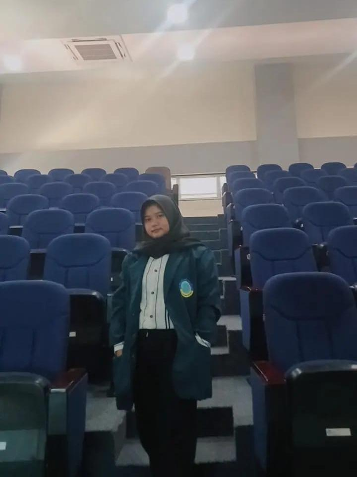

Profile Mahasiswa
Agnita Najwa Darmawan
NIM: 2307055
Email: agnita@email.com
Asri Dwi Aryanti
NIM: 2307060
Email: asri@gmail.com

Amira Rodianti
NIM: 2307058
Email: amira.rodianti17@gmail.com
Heryanti Rima Mentari
NIM: 2307068
Email: heryantimentari28@gmail.com
Muhammad Rafli
NIM: 2307071
Email: raflimuhammad069@gmail.com
Members’ Roles and Contributions
Asri – Reading Material Research and Curation
Asri was responsible for researching and gathering reading
materials for the Mini Library. She collected English articles,
short stories, and educational resources related to the Smart City
theme. She also ensured that the selected texts were suitable for
learners’ reading levels and written in clear, comprehensible
English. Her work significantly supported the development of
reading skills by providing authentic and relevant content. Asri
believed that the project’s main strength was the variety and
quality of materials, while its weakness was the absence of
summaries to help readers understand the main ideas more quickly.
She recommended adding brief summaries and key vocabulary lists to
improve user comprehension.
Amira – Audio Material Selection and Preparation
Amira was responsible for searching for and selecting already available video materials, such as educational videos and learning-related clips related to Smart City topics. She carefully selected videos with clear pronunciation and appropriate duration, and prepared short transcripts for some of them to improve users’ comprehension. Her contribution helped enhance users’ English comprehension skills and exposed them to authentic English use in real-life contexts. She noted that the combination of text and video made the project more engaging. However, she also identified the lack of information regarding difficulty levels and video duration as a weakness. Amira suggested that future improvements should include difficulty level indicators to help learners choose materials that match their abilities.
Agnita – Planning, Design, and Quiz Development
As the main planner and designer, Agnita was responsible for
creating the overall structure and layout of the CityPedia
website. She designed the interface for the Home, Smart City
Bogor, Profile, and Quiz pages, ensuring the navigation was
user-friendly and visually appealing. In addition, she developed
an interactive quiz feature to assess users’ understanding of the
Smart City concept. Her contribution was essential in supporting
reading and listening activities, as the design made the materials
more accessible and engaging. According to her evaluation, the
project’s strength lies in its clean and informative layout, while
its weakness is the lack of mobile responsiveness. She suggested
improving the quiz feedback system and optimizing the design for
mobile users in future updates.
Rafli – Front-End Coding and Content Integration
Rafli played a key role in the technical development of the Mini
Library, focusing on the front-end programming. He implemented the
design created by Agnita using HTML, CSS, and JavaScript, and
integrated all the content provided by Asri and Amira. Rafli also
ensured that features like the quiz, audio buttons, and navigation
menus functioned properly. His contribution made the website
interactive and user-friendly, enabling users to read and listen
to materials smoothly. He evaluated that the project’s main
strength was its functional and attractive interface, while the
main weakness was slow page loading speed. He suggested improving
code efficiency and adding accessibility features such as
alternative text for visually impaired users.
Heryanti – Media Integration and System Testing
Heryanti was responsible for managing media integration, file
storage, and system testing. She ensured that all files—texts,
images, and audio—were properly connected and accessible
throughout the website. She also tested the system to identify
bugs and compatibility issues across devices. Her contribution
ensured that users could access reading and listening materials
without technical interruptions. She identified system stability
as a major strength, while the lack of detailed documentation for
maintenance was a limitation. Heryanti suggested adding a user
guide and backup system to make future updates easier and safer.